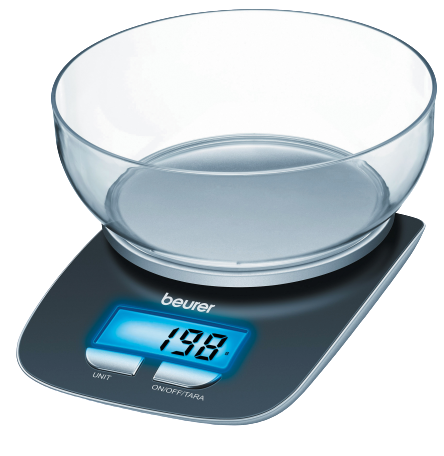
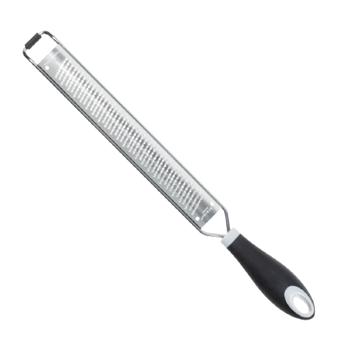

Le matériel que nous recommendons :
| Nom | Commentaire | |
|---|---|---|

|
Couteau |
L'objet le plus utiliser en cuisine. Attention à bien choisir ses couteaux. Les plus utilsés sont le couteau d'office, l'éminceur, et le filet de sole |
|  |
Balance |
Une balance moderne dotée d'une précision au dixième près. Idéal pour les recettes de perfectionniste |
|
Rouleau à patisserie |
Ce rouleau qui transformera tous les ingrédients en fine couche de bonheur |
|

|
Fouet |
Un fouet qui homogénéisera chaque liquide en un coulis somptueux |

|
Rape |
Que se soit pour du fromage, des légumes ou bien d'autres ingrédients, votre gamme de plats va s'élargir. Un objet à ne pas raper |

|
Mixeur |
Le mixeur est un très bon objet vous simplifiant la découpe des ingrédients, les transformant souvent en liquide |

|
Mixeur plongeant |
Ce mixeur permet de réduire les légumes en purée, d'émulsionner et d'homogénéiser certaines sauces. Elle permet de travailler directement dans le récipient de cuisson et limite donc les manipulations ou transvasements. |
|
Micro-onde |
Objet presque indispensable. Permet de réchauffer vos mets |
|

|
Four |
Cuir, griller, chauffer, ses fonctionnalitées n'ont pas finis de vous surprendre |

|
Poële |
La cuisson de chaque ingrédients sera toujours impécable avec cet objet révolutionnaire |

|
Casserole |
La grande capacité de cet objet est idéal pour les plats à cuisson hydrolique et les familiaux |

|
Moule à manqué |
Ce moule à bord haut va remplir de bonheur lorsque vous l'utiliserez pour vos gateaux, génoises et bien d'autres recettes |

|
Plat à gratin |
Le plat parfait pour préparer tous les gratins préférés des enfants |
|
Plat à tourte |
Les meilleurs tourtes à déguster sont à venir grâce à ce plat |
|

|
Ramequin |
Conteneur très pratique pour y mettre des liquides ou même des ingrédients |

|
Chinois étamine |
Similaire à une passoire, le chinois étamine vous permettra de filtrer les ingrédients non solide comme les sauces ou encore le thé. |

|
Poche à douille |
La poche à douille est un sac muni d'un embout appelé douille, utilisé en cuisine pour décorer ou garnir des mets. |

|
Douille |
Cône creux dont l'ouverture, au sommet, est de formes et de largeurs variables donnant une forme spécifique à la préparation qui sort de la poche à douille. |

|
Éplucheur |
Ustensile de cuisine destiné à éplucher les légumes ou tubercules entourés d'une peau. |
|
Friteuse |
Ustensile permettant de frire les aliments. |
|

|
Moule à buche |
Ustensile qui permet de façonner et de cuire des bûches de Noël ou encore de réaliser des terrines. Ce type de moule est aussi appelé gouttière car il en a la forme. |
|
Moule à insert |
Ce moule multi insert vous permettra d’ajouter différentes saveurs à l’intérieur de vos plats. |
|

|
Presse-agrumes |
Ustensile servant à presser les agrumes pour en extraire le jus. |
|
Robot patissier |
Appareil électrique de cuisine utilisé pour faciliter diverses tâches répétitives dans le processus de préparation des aliments. |
|

|
Sauteuse |
Mélange entre la poêle et la casserole, la sauteuse sera l'ustensile parfait pour faire sauter ces aliments. |
|
Siphon |
Le siphon est une bouteille métallique sous pression qui sert à expulser une préparation sous forme de mousse à l'aide de l'injection d'un gaz |
|

|
Tapis en silicone |
Ce tapis peut supporter une chaleur élevée et remplacer le papier cuisson pour la cuisson et la préparation de pâtisserie |

|
Thermo-sonde |
Cette thermo-sonde vous garantira la cuisson parfaite de toutes vos recettes. Piquez la sonde dans votre plat, choisissez votre programme ou paramétrez et attendez la sonnerie. |
|
Wok |
Le wok à la même utilité que la poelle, mais la cuisson est favorisée par la forme sphérique de l'ustensile, ce qui nécessite que très peu de matière grasse. |
|
|  |
Zesteur |
Remplacez votre râpe volumineuse, ou vos robots zesteurs lourds, dangereux et difficiles à nettoyer, en optant pour un simple zesteur. Ses dents métalliques empêchent les accumulations de résidus, contrairement à d’autres râpes, faisant qu’elle peut être nettoyée en un clin d'œil. Passez la simplement sous l’eau, et elle sera comme neuve ! Éblouissez vos amis avec de nouvelles recettes, comparables à celles des restaurants. Testez de nouvelles saveurs grâce à des ingrédients zestés finement, sans aucun goût amer. Râpez le fromage le plus dur sans avoir à trop forcer. Zestez également en toute simplicité les oranges, citrons et autres agrumes grâce à votre lame de qualité. En quelques secondes, vous pourrez avoir de l'ail ou du gingembre finement râpé, et pourrez même préparer vos desserts préférés garnis de flocons de chocolat. |